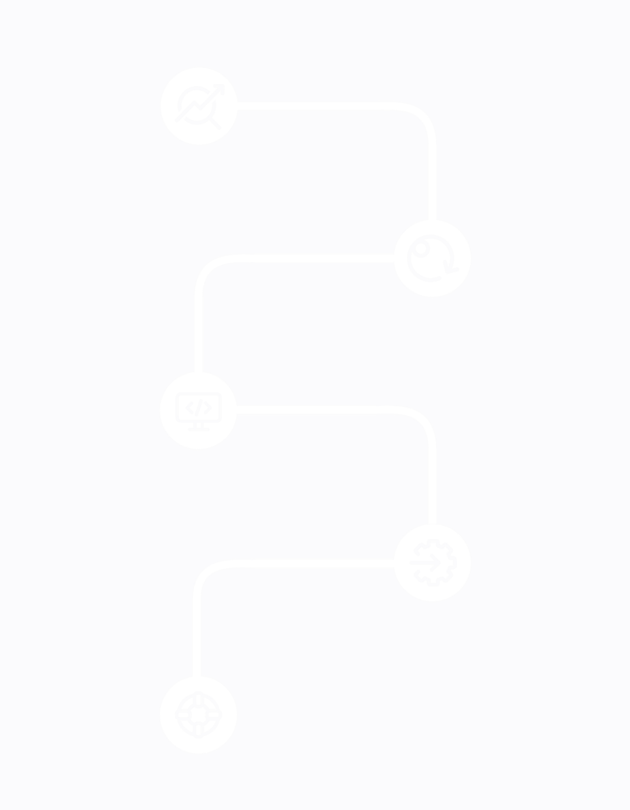
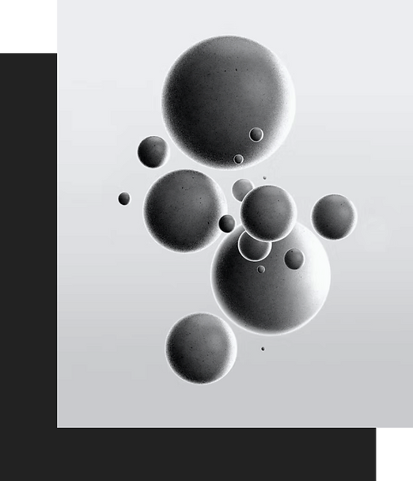

Full-cycle delivery team
Invatechs is a full-cycle software development company that provides comprehensive and reliable software solutions for businesses of all sizes. Our team comprises experienced project managers, business analysts, UI/UX designers, developers, quality assurance specialists, and DevOps engineers who work together to successfully deliver high-quality software according to the customer's requirements.

Project Analysis
At the project analysis stage, we discuss the goals and requirements of the project, analyze the market and competition, and determine the user needs and essential functional requirements for the software. We use various tools and processes to collect data and develop an understanding of the project's purpose, scope, and objectives.
Development
Once we have collected the requirements, we begin developing the software. This includes creating the design, architecture, and code of the application. As we develop the software, we ensure it is robust and scalable, meeting the customer's needs and requirements.
Testing
Before the software is released to the market, we perform various tests to ensure that all features and functions work properly and that the application meets the customer's requirements. We use automated testing tools and manual testing processes to ensure the software is up to the standards of quality and accuracy we aim for.
Release
Once all tests have been successful, the application is ready to be released to the market. At this stage, we prepare the application for release and ensure it is ready for public consumption.
Product Support
Once the software is released, we continue to serve our customers and offer them support by providing updates and bug fixes to the application. This ensures that the application functions properly and efficiently throughout its lifespan.
Technologies we use
Front-end
Angular
Angular
Angular

See all
Pricing Models
In addition, Invatechs offers a custom pricing model to meet the particular demands and needs of the client. The company emphasizes keeping communication with the customers open so that they are aware of all costs.
The size of the team
The more team members, the higher the cost. This model is suitable for large-scale projects with complex requirements that require a dedicated team of specialists.
Project size and complexity
The larger and more complex the project, the higher the cost. This model is suitable for mid to large-scale projects with varying complexity.
Experience of the employees
The more experienced the team members, the higher the cost. This model is suitable for complex projects that require a high level of expertise and experience.